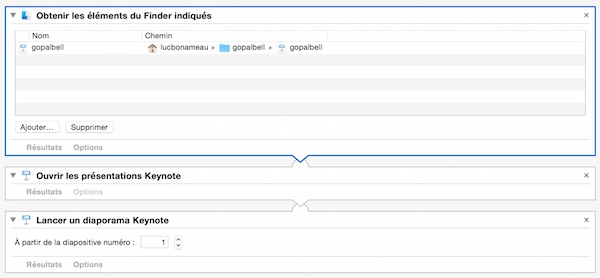
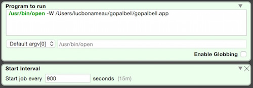

J'aime les logiciels....


Le principe du logiciel est très simple : on paramètre les intervalles entre les sons de cloches, on choisit son son de cloche favori, le volume, et c'est parti.
Sur ordinateur
On peut installer un logiciel de cloche de pleine conscience sur son ordinateur : pratique pour faire des pauses à intervalles réguliers. Comme Thay aime à le répéter, lorsque l'on travaille devant un ordinateur, on oublie que l'on a un corps. Un logiciel de pleine conscience offre une chance de se reconnecter au corps, en prenant un inspir et un expir conscients et en décollant nos yeux de l'écran.
On peut trouver des logiciels de pleine conscience pour Mac, Windows ou Linux en faisant une recherche sur internet.
Pour les geeks
Il est possible de se faire sois-même son logiciel de pleine conscience, en paramétrant votre système de façon à ce qu'il lance une tâche à intervalles réguliers.
Sur Mac
- Créer une application avec automator. L'application appelle un programme comme par exemple Keynotes (pratique car permet d'afficher du texte, des images et des sons) et charge votre fichier à afficher. 
- Télécharger LaunchControl, un programme gratuit qui aide à configurer l'appel du programme par le système. Il suffit d'indiquer le chemin de votre programme et les paramètres d'appel. 
Sur smartphone
On peut également installer un logiciel de cloche de pleine conscience sur son smartphone : la cloche nous suit où que nous soyons ! Particulièrement utile lors d'un travail (cuisine, bricilage, etc), pour s'arrêter quelques instants, revenir à soi, puis reprendre.
On peut trouver des logiciels de pleine conscience pour iOs, Android en faisant une recherche sur l'AppStore ou Google Play.
A la maison
Il existe aussi des petits boitiers esthétiques, que l'on dépose sur un meuble dans la maison, et qui offrent un son de cloche toutes les 15/30 minutes ou toutes les heures. Un des modèles s'appèle le Gong Time et se présente sous la forme d'une jolie pyramide en bois
Il y a aussi les horloges traditonnelles, les horloges "coucou" etc
On peut utiliser la cloche dans un environnement collectif mais il est préférable de ne pas attendre de son entourage qu'ils pratiquent aussi l'arrêt lors de vos sonneries de cloches. Tout au plus, vous pouvez les informer de votre pratique, sans prosélytisme, et des bénéfices que vous en retirez. Vous pouvez demander à votre entourage (partenaire, enfants, collègues) de ne pas vous interrompre dans votre retour à vous-même lors des quelques instants de rappel.
Est-il possible de trouver une gestion de mots de passe efficace, qui permettent en même temps d'avancer dans sa quête spirituelle ? Gérer ses mots de passe peut s'avérer compliqué en raison du nombre de comptes grandissant que chacun utilise. Il est nécessaire que le mot de passe soit suffisamment sécure et en même temps, il est nécessaire de se rappeler de son mot de passe.
Sur ordinateur
Une méthode efficace consiste à choisir une phrase, un enseignement, une maxime ou un vers de poème, puis à prendre les premières lettres de chaque mot pour constituer le mot de passe. Exemple : "Le Royaume des Cieux est en vous", donne "LRdCeev". Il est conseillé d'ajouter quelques chiffres er symboles pour renre me mot de passe plus fort. Vous pourrez par exemple ajouter à ce code le nombre de lettres qui composent un des mots, le premier par exemple, soit le chiffre '2' dans notre exemple, ce qui donne un mot de passe 'LRdCeev2'.
Ainsi, à chaque entrée de votre mot de passe, vous martelez votre mental, votre intellect et votre égo. Pas super ça ?
Maintenant, vous avez certainement plusieurs comptes différents et il est recommandé d'avoir un mot de passe différent pour chacun d'eux. Sinon, si quelqu'un trouve votre mot de passe, il peut accéder à tous vos comptes. Une solution consite à utiliser le même mot de passe de base pour tous les sites et à y ajouter une lettre relative au compte concerné (la première du nom de domaine par exemple) . Ex : ajouter 'g' à la fin du mot de passe pour le compte google, ce qui donne 'LRdCeev2g'
Personellement, j'utilise 3 mots de passes différents pour tous mes sites, auquels j'ajoute une petite variante pour chaque site. Pourquoi 3 ? Je classe les comptes utilisés en fonction de leur importance, du niveau de confidentialité requis.
- Niveau 1 : mes comptes bancaires, mes données très personnelles (emails, liste de contacts, notes). Mot de passe fort.
- Niveau 2 : mes comptes de services commerciaux que j'utilise, avec lesquels j'effectue mes achats (transport, divertissement, achats en ligne) et qui sont reliés à mes comptes importants (comptes bancaires). Mot de passe de force moyenne
- Niveau 3 : mes comptes surlesquels il n'ya pas trop d'enjeu de perte (sites de pétitions en ligne, sites d'associations dont je fais partie, etc)
Tout ce que j'ai à faire, c'est écrire mes 3 phrases dans un carnet, et applique la formule que je me suis donné (les premières lettres, le chiffre etc) pour retrouver mon mot de passe.

A propos de l'auteur

2016 © Tout est Lumière. Copyleft.